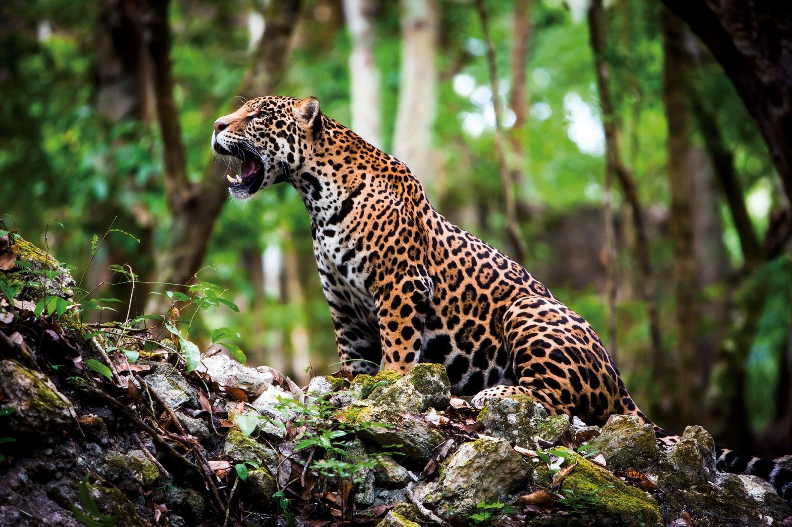
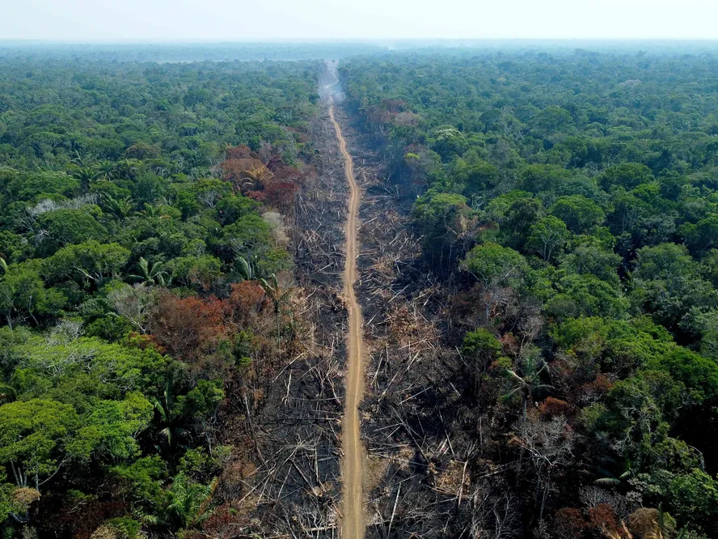

Desmatamento da Amazônia: Um Alerta para o Mundo
A Floresta Amazônica, frequentemente denominada como "pulmão do mundo", não só desempenha um papel vital na manutenção do equilíbrio climático do planeta, mas também é lar de uma biodiversidade incomparável e de diversas culturas indígenas. Escolhemos este tema devido à crescente preocupação com a aceleração de seu desmatamento e as consequências devastadoras que isso representa para a humanidade e para o meio ambiente. É crucial entender o valor da Amazônia e conscientizar-se sobre os perigos que a ameaçam para que possamos atuar de maneira proativa em sua preservação.
Por que a Floresta amazônica é tão importante?
Além de sua rica diversidade biológica, a Amazônia desempenha um papel crucial na regulação climática global. Ela atua como um gigantesco sumidouro de carbono, absorvendo enormes quantidades de dióxido de carbono da atmosfera e ajudando a mitigar os efeitos das mudanças climáticas. Em contrapartida, libera oxigênio essencial para a sustentação da vida na Terra. Outra característica vital da Amazônia é sua influência no ciclo hidrológico. Não só é crucial para a América do Sul, mas também afeta regiões do hemisfério norte. Isso se deve aos "rios voadores", um fenômeno onde a evaporação da floresta contribui significativamente para os padrões de chuva em vastas áreas.
Tão importante quanto sua biodiversidade e papel ecológico é o valor cultura-l da Amazônia. Ela é o lar de mais de 400 grupos indígenas, muitos dos quais permanecem isolados do mundo exterior. Estas comunidades têm uma profunda conexão e entendimento da floresta, agindo como seus guardiões naturais.
Quais são os riscos que a floresta enfrenta?
No entanto, a Floresta Amazônica enfrenta riscos significativos. O aumento nas queimadas, muitas vezes resultantes de práticas agrícolas, tem devastado vastas extensões desta floresta primordial, liberando enormes quantidades de CO2 na atmosfera. Além disso, a crescente pressão do desmatamento, impulsionado pelo avanço da agricultura, exploração madeireira e infraestrutura, tem levado à degradação acentuada da floresta, resultando na perda de habitat para inúmeras espécies e contribuindo para emissões significativas de carbono. Estas ações não só ameaçam a fauna e flora, mas colocam muitas espécies em risco de extinção, levando a um desequilíbrio nos ecossistemas locais.
As consequências do desmatamento da Amazônia são profundas e multifacetadas. A destruição deste bioma pode acelerar drasticamente as mudanças climáticas devido à liberação de carbono e à perda de sua capacidade de sequestrar CO2. Alterações no ciclo hídrico também podem surgir, o que afetaria negativamente a agricultura, os sistemas hídricos e, em última análise, a vida das populações locais e de regiões distantes. A extinção de espécies associada ao desmatamento pode ter repercussões imprevisíveis, variando da perda de possíveis compostos medicinais até perturbações ecológicas mais amplas. A nível cultural, o avanço sobre a floresta ameaça a sobrevivência das comunidades indígenas, levando à erosão de sua cultura, conhecimento ancestral e modo de vida.
Concluindo, a importância da Floresta Amazônica para o equilíbrio global é inquestionável. É imperativo que a sociedade global reconheça sua relevância e tome medidas urgentes para garantir sua preservação. Proteger a Amazônia vai além de uma mera questão ambiental; é uma questão de sobrevivência, cultura e equilíbrio global.